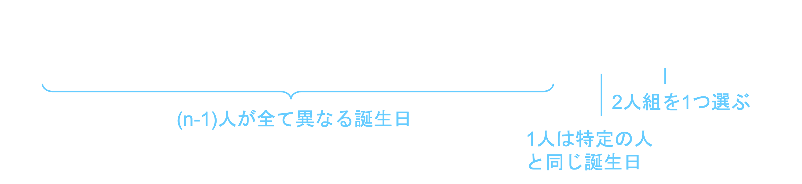

教室の中に同じ誕生日がいる確率は、余事象の考え方を使って計算できます。
少なくとも一組同じ誕生日がいる確率 = １-（全員が異なる誕生日である確率）
クラスの人数をn人とすると下の式になります。
30人のクラスであれば
となります。
思ったより大きな値になって驚いた人も多いのではないでしょうか。
確かに「自分と同じ」誕生日の人が教室にいる確率を考えると

という式になり、30人のクラスであればこの値はおよそ0.079となります。
クラス内に少なくとも一組いる確率と比べると９分の1程度になっていますね。
他の値でも計算してみよう！
教室に人いるとき、全員が異なる誕生日である確率は29.4 %です。
つまり少なくとも1組同じ誕生日がいる確率は70.6 %です。
では、「少なくとも一組同じ誕生日がいる」とは具体的にどのような場合があるでしょうか。
-
二人組が一つだけ
 -
二人組が二つ
 -
三人組が一つ

計算してみよう！
教室に人いるとき、
-
二人組が一ついる確率は38.0 %です。
-
二人組が二ついる確率は21.3 %です。
-
二人組が三ついる確率は6.83 %です。
-
三人組が一ついる確率は1.05 %です。